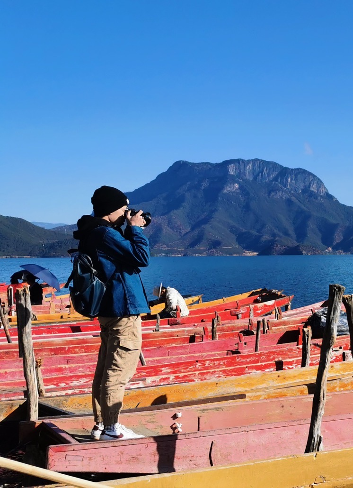

Chongjian GE 葛崇剑Ph.D. Candidate
Dept. of Computer Science
|
 |
Biography
I am currently a third-year (2020-now) Ph.D. student in the Department of Computer Science, the University of Hong Kong,
under the co-supervision of Prof. Ping Luo and Prof. Wenping Wang.
My research interest is computer vision and machine learning. I have done some works about fashion generation and self/semi/weak-supervised learning.
News
- [02/2023] One paper was accepted by TIP.
- [01/2023] One paper was accepted by ICLR 2023.
- [09/2022] One paper was accepted by NeurIPS 2022 Track Datasets and Benchmarks.
- [09/2022] One paper was accepted by NeurIPS 2022.
- [01/2022] Two papers were accepted by ICLR 2022 (one Oral paper, and one Spotlight paper).
- [10/2021] One paper was accepted by NeurIPS 2021.
- [07/2021] One paper was accepted by ICCV 2021.
- [03/2021] Two papers were accepted by CVPR 2021.
Publications [Google Scholar]
(* indicates equal contribution)
 |
Soft Neighbors Are Positive Supporters in Contrastive Visual Representation Learning,
Chongjian Ge, Jiangliu Wang, Zhan Tong, Shoufa Chen, Yibing Song, and Ping Luo International Conference on Learning Representations (ICLR) 2023 [paper] |
 |
Revitalizing CNN Attentions via Transformers in Self-Supervised Visual Representation Learning,
Chongjian Ge, Youwei Liang, Yibing Song, Jianbo Jiao, Jue Wang, and Ping Luo Advances in Neural Information Processing Systems (NeurIPS) 2021 [paper|code|media report] |
 |
Disentangled Cycle Consistency for Highly-realistic Virtual Try-On,
Chongjian Ge, Yibing Song, Yuying Ge, Han Yang, Wei Liu, and Ping Luo IEEE/CVF Conference on Computer Vision and Pattern Recognition (CVPR) 2021 [paper|code] |
 |
Rethinking Attentive Object Detection via Neural Attention Learning,
Chongjian Ge, Yibing Song, Chao Ma, Yuankai Qi and Ping Luo JOURNAL OF IEEE TRANSACTIONS ON IMAGE PROCESSING (TIP) [paper] |
 |
AdaptFormer: Adapting Vision Transformers for Scalable Visual Recognition,
Shoufa Chen*, Chongjian Ge*, Zhan Tong, Jiangliu Wang, Yibing Song, Jue Wang, and Ping Luo Advances in Neural Information Processing Systems (NeurIPS) 2022 [paper|code|project page] |
 |
Not All Patches are What You Need: Expediting Vision Transformers via Token Reorganizations,
Youwei Liang, Chongjian Ge, Zhan Tong, Yibing Song, Jue Wang, and Pengtao Xie International Conference on Learning Representations (ICLR) 2022 (Spotlight) [paper|code] |
 |
CycleMLP: A MLP-like Architecture for Dense Prediction,
Shoufa Chen, Enze Xie, Chongjian Ge, Runjian Chen, Ding Liang, and Ping Luo International Conference on Learning Representations (ICLR) 2022 (Oral) [paper|code|media report] |
 |
Parser-Free Virtual Try-on via Distilling Appearance Flows,
Yuying Ge, Yibing Song, Ruimao Zhang, Chongjian Ge, Wei Liu, and Ping Luo IEEE/CVF Conference on Computer Vision and Pattern Recognition (CVPR) 2021 [paper|code] |
 |
Watch Only Once: An End-to-End Video Action Detection Framework,
Shoufa Chen, Peize Sun, Enze Xie, Chongjian Ge, Jiannan Wu, Lan Ma, Jiajun Shen, and Ping Luo IEEE/CVF International Conference on Computer Vision (ICCV) 2021 [paper|code] |
 |
AMOS: A Large-Scale Abdominal Multi-Organ Benchmark for Versatile Medical Image Segmentation,
Yuanfeng Ji, Haotian Bai, Jie Yang, Chongjian Ge, Ye Zhu, Ruimao Zhang, Zhen Li, Lingyan Zhang, Wanling Ma, Xiang Wan, Ping Luo Advances in Neural Information Processing Systems (NeurIPS 2022 Track Datasets and Benchmarks) (Oral) [paper|project page] |
Honors and Awards
Hong Kong PhD Fellowship Scheme, HKU, 2020-2024
YS and Christabel Lung Postgraduate Scholarship, HKU, 2020-2021
Rhino-Bird Program, Tencent, 2020-2022
First-Class Scholarship, XJTU, 2018-2019
High-Voltage Scholarship, XJTU, 2017-2018
Pengkang Scholarship, XJTU, 2016-2017
Huichuan Scholarship, XJTU, 2015-2016
Samsung Scholarship, XJTU, 2014-2015
Teaching
- From Human Vision to Machine Vision [Section 2A, 2020] [CCST9049]
- Deep Learning [Section A, 2021] [DASC7606]
Academic Service
- Conference Review: IEEE International Conference on Computer Vision (ICCV), 2021 IEEE/CVF Conference on Computer Vision and Pattern Recognition (CVPR), 2022 ACM International Conference on Multimedia (ACMMM), 2022 IEEE/CVF Winter Conference on Applications of Computer Vision (WACV), 2023 Neural Information Processing Systems (NeurIPS), 2022
- Journal Review: IEEE Access IEEE Journal of Biomedical and Health Informatics
© Chongjian GE | Last updated: Dec. 2021 | .